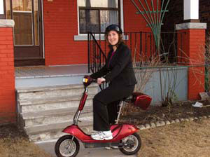
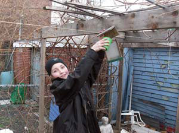
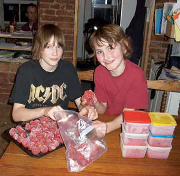
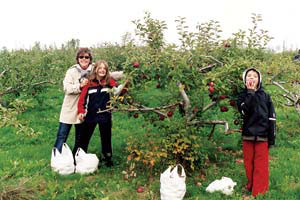
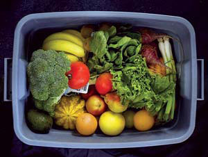
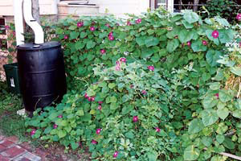
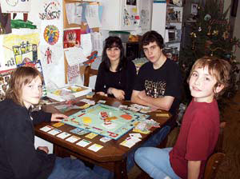
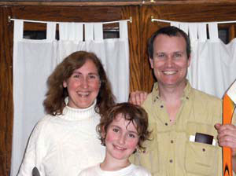

This remarkable family has discovered the greener side of urban life.
My family and I live in Toronto, where I’m a social worker and my husband, Richard, is a home renovator. We live in the neighborhood of Roncesvalles, an older part of town originally settled by Polish immigrants and known for being a walking community.
Although I grew up in a small town and sometimes dream of moving to the country, I’ve found that living lightly can sometimes be easier in a city. In our multicultural neighborhood, one attitude everyone shares - regardless of background - is respect for healthy lifestyles. We chose to live in this neighborhood because people walk everywhere, cars slow down for pedestrians and bikes, nearly everyone gardens, and fresh food is readily available from local greengrocers, butchers and delis.
Our house is an old, two-story boarding house, built during the 1930s. We live here with our son, Adrian, and my two teenage stepsons, Jeremy and Josh, who are here on many weekends. This was our first house, and when we moved in seven years ago, we shared the cost and space with my husband’s brother, who lived on the second floor, while we took the first floor and partially finished basement.
When Richard’s brother moved into a new house two years later, we opted to turn the second floor into a separate apartment, from which we earn more than enough to pay the entire mortgage: not a bad trade for the loss of a few rooms! The rest of the house is just big enough for our needs, since each room serves more than one function. We think living in less space has helped us bond as a family, and we also appreciate spending less time cleaning.
Toronto has numerous incentives that encourage homeowners to make environmentally friendly choices. We have taken advantage of several of these incentives, and in the past five years, we’ve received more than $1,400 in rebates.
The first summer after we bought our house, we took part in the city’s “downspout disconnection” program and redirected the runoff water from our house into rain barrels. Toronto started this program to reduce the amount of water flowing into the storm sewers - during heavy rains, overloaded sewers can back up into basements or overflow into lakes and rivers. The city provided two rain barrels and a whole new gutter system, labor included, all for the cost of one rain barrel ($60). In the front yard, I have the rain barrel hooked into a drip irrigation system for my flowers, and in the back yard, I use the water for the vegetable garden.
The next summer, the city offered rebates for low-flow toilets. Both the toilets in our house were the old 13-liter models that use more water than necessary, so we researched low-flow toilets and settled on a Toto-brand model that uses water more efficiently. We spent a total of $350 for two toilets, but pocketed a rebate of $120.
While setting up the apartment, we bought a new washer and dryer. We purchased a front-loading washing machine half-price at a Sears scratch-and-dent store. Six months later, the city rolled out an incentive program for front-loading washing machines. We submitted the receipt, and the city agreed to backdate the agreement and sent us a check for $60. It never hurts to ask, even with bureaucrats!
The final rebate took a lot more effort, but it will save us money in the long run. The city provided a free consultation with an energy specialist, who checked for air leaks to discover where in our house we were losing heat in the winter and recommended specific improvements. After the consultation, we filled the holes where air was passing through gaps in the insulation. Those improvements resulted in a total of $800 in rebates, and we also lowered our heating costs by creating a more efficient home.
I feed my family much the same way that I ate growing up: organic, locally grown and home-preserved foods. By the time the kids go back to school in the fall, we have a fully stocked freezer and rows of canned goods lining the top of the kitchen cabinets.
We have a postage stamp-sized back yard, but like most of our elderly Polish neighbors, we use nearly the entire space to grow vegetables. The only grass we have is a tiny patch in the back that we can cut in 10 minutes with an electric weed trimmer. Not having a big lawn hasn’t been a problem for the boys, because if they want space outdoors for sports, we live just down the street from a school with huge soccer fields.
After growing many kinds of vegetables, I have settled on tomatoes, greens, snow peas, beans, onions, cucumbers, zucchini and a variety of herbs. I’ve found that planting lettuce and greens in containers makes them grow faster than seeds planted at the same time in the beds. Last year, we were eating lettuce and spinach by the end of April! Even tomatoes produce sooner here in the city, probably because of the urban heat island effect: the warmer temperatures found in cities that scientists say are a result of all the pavement, which absorbs heat. I’m supposed to be in Zone 6a, but I ignore those dates for planting because I have never seen a killing frost after May 1, and often I am still harvesting into October or even November.
I made tripods for the beans, cucumbers and zucchini, so they require less precious space to grow. I also space my plants closer together than is recommended on the seed packages. My children help me in the garden. I think it’s important that they understand food comes from the garden and not just from the grocery store.
In addition to the vegetables, we have a small raspberry patch, just for picking fresh berries for breakfast, and a lovely grape arbor with two kinds of grapes. We have made grape jelly for several years now, but last year we had so many white grapes that we boiled them into grape juice and froze it for the winter. Without added sugar, it was rather tart, almost like a tonic, and was delicious with a little club soda or ginger ale.
The garden provides plenty of fresh produce. For preserving, I rely on local greengrocers. Each year, I freeze 2 bushels of corn, with the kids’ help. I often have help from friends interested in learning preserving techniques: This is one of the benefits of city living!
No summer is complete without our annual trip to the Springridge Strawberry Farm. We have been going to the same pick-your-own fruit farm for 12 years. The farmer who owns it doesn’t use any chemicals on his strawberries; he says strawberries grown to be sold locally and in season only rarely need or get pesticides. This year my family picked 220 pounds of strawberries and 40 pounds of raspberries. Most of these will be individually quick-frozen on cookie sheets and then bagged to be eaten by the kids throughout the winter. They like to gnaw on these frozen berries as a snack, and at one time we had to ration these to make them last through the winter. The kids also eat a lot of homemade jam, so this year we made a whopping 12 batches of jam for the freezer!
In the winter, when there is little fresh local produce, we subscribe to an organic vegetable drop-off service that brings an assortment of fruits and vegetables to our front porch. We try to eat a variety of local and organic produce, and by receiving this box, we ensure that we eat healthy all winter long.
Some day I would like to live in the country, but my biggest fear is that if we moved, I would spend all my time driving. As it is, I rarely ride in our car unless it’s a family outing.
I take a streetcar to work - 25 minutes each way. Parking would cost $10 per day, so it wouldn’t be economical to drive even if we had a second car, plus driving is slower than taking public transit. Several months ago, I bought a little 350-watt electric scooter that I’ve started riding to work during the summer. Everyone in our flat city thinks the electric scooter will be the next big wave of transportation.
I ride the scooter in the bike lanes, and the older kids can ride it to friends’ houses as well, since they don’t need a license. I dream of connecting it to a solar panel to recharge it someday, but for now I plug it into a regular electrical outlet.
My husband uses the car every day for work, but since he’s a home renovator, he has the option of working close to home. Fortunately there are many old houses in our neighborhood, so he only takes jobs that are less than a 10 minute drive from our house.
After work, we get around by walking or biking. Basic amenities are within an easy 10 minute walk, including schools and day care, as well as a swimming pool, public library, video store, greengrocery, butcher, coffee shop, theater and health food store.
Kids’ sports have been a bigger challenge to our one-car situation, but we found a tae kwon do school with family classes, so we all can go get our exercise at the same time, instead of driving to individual classes. When our youngest son wanted to play hockey, we looked around and found a hockey arena that is only a 10 minute streetcar ride away with all games played at the same arena. This way, he can enjoy the sport, but it doesn’t take over our lives.
We have also cut down on driving by encouraging the kids to ride bicycles. When they were babies they rode in baby seats, then on a trail-along bike (one wheel, handlebars and pedals, attached to an adult bike). For the kids, cycling is now a way of life. Between cycling and public transit, Josh, who is now 17, has decided he doesn’t need to get his driver’s license for awhile, to our great relief! We love living in a neighborhood where we can make these kinds of choices.
Nobody knows more about the joys and challenges of wiser living than those of you who are pursuing the dream. Tell us about your experiences with the self-reliant life. We’d especially like to hear from more people who are living in cities.
Submit your firsthand report (1,500 to 2,000 words), with photos, to firsthand@MotherEarthNews.comor Firsthand Reports; Mother Earth News; 1503 SW 42nd St.; Topeka, KS 66609. We’ll pay $150 for each story we publish.
|
 LINDA HOCHSTETLER Linda Hochstetler uses an electric scooter to get around Toronto. |
 LINDA HOCHSTETLER Linda Hochstetler’s son, Adrian. |
 LINDA HOCHSTETLER Linda Hochstetler’s sons, Adrian and Jeremy, prepare produce for freezing. |
|
 LINDA HOCHSTETLER Linda Hochstetler’s family enjoys local, organic food. Adrian picks apples with his aunt and cousin (right). |
 PETE GAFFNEY During the winter, organic veggies come to the family’s doorstep through a CSA (community-supported agriculture) subscription. |
 LINDA HOCHSTETLER The family uses a rain barrel to collect water for the flower and vegetable gardens. |
|
 LINDA HOCHSTETLER Jeremy and Adrian play Monopoly in the kitchen with Josh and Josh’s girlfriend, Sammi. |
 LINDA HOCHSTETLER Linda and Richard, with Adrian. |
|